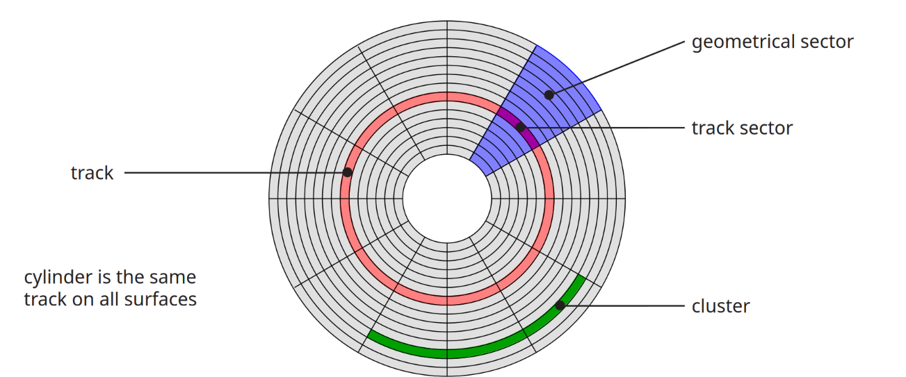
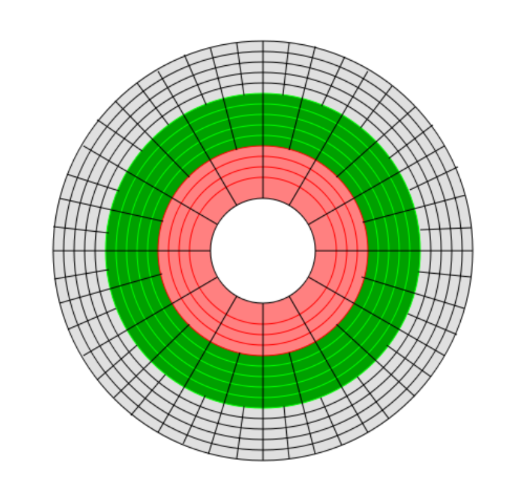

Data Storage
Overview
This lecture covers how databases store and manage data efficiently on secondary storage.
- The memory hierarchy and trade-offs between speed, cost, and capacity.
- Physical organisation of disks and blocks.
- Buffer management and replacement strategies.
- The Five-Minute Rule for memory vs disk trade-offs.
- Representation of data items, records, and blocks.
- Addressing, pointer swizzling, insertion, and deletion issues.
Storage Organisation
The Memory Hierarchy
Databases rely on multiple levels of storage:
- Cache
- Main Memory
- Secondary Storage
- Tertiary Storage
Each level differs in:
- Volatility
- Speed
- Cost
- Capacity
Cache
- Volatile
- Very fast
- Very expensive
- Limited capacity
- Hierarchical (Registers → L1 → L2)
Typical values: - Registers: ~10¹ bytes, 1 cycle - L1: ~10⁴ bytes, <5 cycles - L2: ~10⁵ bytes, 5–10 cycles
Main Memory
- Volatile
- Fast
- Medium capacity
- Typical capacity: 10⁹–10¹⁰ bytes
- Typical access time: ~10⁻⁸ s (20–30 cycles)
Secondary Storage
- Non-volatile
- Slow
- Cheap
- Large capacity
- Typical capacity: 10¹¹–10¹² bytes
- Typical access time: ~10⁻³ s (~10⁶ cycles)
Used for: - Persistent database storage - Hard Disk Drives (HDDs)
Tertiary Storage
- Non-volatile
- Very slow
- Very cheap
- Very large capacity
- Typical capacity: 10¹³–10¹⁷ bytes
- Typical access time: 10¹–10² seconds
Secondary Storage: Hard Disks
Disk Structure
Disk components:
- Track - Concentric tracks
- Sector - Track sector (a part of the sector which belongs to a single track) and geometrical sector (The whole wedge shaped sector)
- Cluster
- Cylinder (same track on all surfaces)

Track Sector Size
Track sectors at the towards the axis of the disk (inner tracks) are much smaller than tracks closer to the circumference of the disk. Size of the track sectors closer to the axis are the limiting factor, the size of that track sector will determine how much data you can fit in a track sector which will then determine how much data you can fit in a block on disk.
Zone Bit Recording (ZBR)
- Outer tracks are longer than inner tracks.
- Instead of constant bits per track:
- Number of sectors per track varies.
- Hybrid of:
- Constant Linear Velocity (CLV)
- Constant Angular Velocity (CAV)
Improves storage density.

Difficulties
Zone Bit Recording makes a few things a little more difficult such as addressing.
Disk Sector Format
Each sector contains:
- Gap – separator
- Sync – start indicator
- Address mark – sector ID
- Data
- ECC – error correcting code
Example (4k Advanced Format):
- Gap + sync + mark = 15 bytes
- Data = 4096 bytes
- ECC = 100 bytes
- ~2.7% overhead
Disk Access Time
Reading
Access Time = - Seek Time - + Rotational Delay - + Transfer Time
Seek Time
Time to move head to correct track.
- ~4 ms (high-end)
- ~15 ms (mobile drives)
Rotational Delay
Average delay = time for 0.5 revolution.
Transfer Time
Transfer time = block size / transfer rate
Transfer rates vary: - Up to 1000 Mbit/s - Blu-Ray ~432 Mbit/s - CD ~1.23 Mbit/s - SSD limited by interface (e.g., SATA 3000 Mbit/s)
Sequential Access
Sequential I/O avoids repeated seeks and rotational delays.
Access time ≈ - (block size / transfer rate) - + negligible overhead
Sequential I/O is much cheaper than random I/O.
Writing
Similar to reading unless verifying:
Access Time = - Seek - + ½ rotation - + Write transfer - + Full rotation - + Read transfer (verification)
Modifying a Block
Steps:
- Read block
- Modify in memory
- Write block
- Optionally verify
Total includes: - Seek - Rotational delays - Transfer times for read/write - Optional verify costs
Block Addressing
Physical Addressing
Cylinder–Head–Sector
Problem: - ZBR makes mapping complex.
Logical Block Addressing (LBA)
- Blocks identified by integer index.
- Firmware maps LBA → physical location.
- Enables remapping of bad blocks.
Block Size Selection
Trade-offs:
Large Blocks
- Fewer seeks
- Lower access overhead
- Better I/O efficiency
But: - More irrelevant data read if accessing a single record.
Solid State Drives (SSD)
Characteristics:
- NAND flash-based
- 4–5× more expensive than HDD
- Smaller maximum capacity (~1–2TB typical)
- Much higher I/O performance
- Asymmetric read/write (writes slower)
- Limited program-erase cycles (~100,000)
- Wear levelling required
HDD vs SSD: IOPS
IOPS = 1 / (seek + latency + transfer)
SSD: - Much higher IOPS - No mechanical seek
Buffer Management
Buffer Pool
- Secondary storage >> main memory
- Buffer pool organised into frames
- Each frame = 1 block + metadata
Buffer Metadata
Each frame has:
- Pin count
- Dirty flag
- Access time (LRU)
- Loading time (FIFO)
- Clock flag (Clock algorithm)
Requesting a Block
- If block in buffer:
- Increment pin count.
- Else if empty frame:
- Read block.
- Else:
- Choose replacement frame.
- If dirty → write to disk.
- Load new block.
- Set pin count = 1.
Replacement Strategies
Frame must have pin count = 0.
LRU
Replace frame with oldest access time.
FIFO
Replace frame with oldest loading time.
Clock
Approximation of LRU.
Cycle through frames: - If not accessed in full cycle → replace.
Single vs Double Buffering
Single Buffering
Time = n(P + R)
- P = process time
- R = read time
- n = blocks
Double Buffering
Overlap processing and reading.
If P > R:
Time = R + nP
More efficient than single buffering.
The Five-Minute Rule
Guideline:
Data referenced every five minutes should be memory resident.
Cost Model
If block accessed every X seconds:
Cost on disk: CD = $D / (X I)
Cost in memory: CM = $M / P
Break-even when:
X = ($D P) / (I $M)
Historical Examples
1997 (HDD)
X ≈ 266 seconds (~5 minutes)
2007 (HDD)
X ≈ 5248 seconds (~1.5 hours)
2007 (SSD)
X ≈ 876 seconds (~15 minutes)
2016 (SSD)
X ≈ 805 seconds (~13.5 minutes)
Modern Hierarchy Observations
- SSD viable between DRAM and HDD.
- DRAM–SSD break-even ≈ 5 minutes.
- SSD–HDD ≈ 1.5 days.
- DRAM energy cost > SSD.
- Likely transition to NVDIMM.
Disk Organisation
Data Items
Stored as bytes (8 bits).
Numbers
- Integer (2 bytes example)
- IEEE 754 floating point:
- 1 sign bit
- Mantissa
- Exponent
Characters
Encodings: - ASCII - UTF-8
Booleans
- 1 byte per value
- Can pack bits if necessary.
Dates
- Days since origin (e.g., 1 Jan 1900, 1 Jan 1970)
- ISO8601
- Calendar: YYYYMMDD
- Ordinal: YYYYDDD
Times
- Seconds since midnight
- ISO8601:
- HHMMSS
- HHMMSSFF
Strings
- Null-terminated
- Length-prefixed
- Fixed length
Fixed vs Variable Length
- Fixed: integers, chars
- Variable: strings, bit arrays
- May include type info.
Records
Definition
Collection of related fields.
Example: - Employee: - Name - Salary - Start date
Fixed Format Records
Schema defines: - Fields - Types - Order - Meaning
Efficient and compact.
Variable Format Records
Self-describing.
Useful for: - Sparse records - Repeating fields - Evolving formats
More space overhead.
Record Headers
May include:
- Record type
- Length
- Timestamp
Blocks
Block Header May Contain
- File ID
- Block ID
- Record directory
- Free space pointer
- Block type
- Pointer to similar blocks
- Timestamp
Separating Records
Options:
- Fixed length
- Special marker
- Lengths in header
Spanned vs Unspanned
Unspanned: - Record fits in one block.
Spanned: - Record split across blocks.
Unspanned simpler but may waste space.
Sequencing
Ordering records by key:
- Enables efficient sequential access.
- Useful for merge-join.
Options: - Physically contiguous - Linked records - Overflow area
Indirection
Physical Addressing
Record ID = Device + Cylinder + Head + Sector + Offset
Rigid and inflexible.
Indirect Addressing
Record ID = Arbitrary bit string.
Mapped to physical address via table.
Allows record movement without changing ID.
Address Management
Each block/record has:
- Database address
- Memory address (when buffered)
Translation table maps DB → memory.
Pointer Swizzling
Convert DB address → memory pointer.
Swizzled pointer contains: - Bit indicating type - Memory or DB address
Strategies:
- Automatic
- On-demand
- No swizzling
Unswizzling
Reverse process before unpinning.
Necessary because: - Blocks may be pinned by swizzled pointers. - Must restore DB addresses before eviction.
Insertion
Easy Case
- Append to end
- Use deleted slot
Hard Case (Sequenced)
- Insert near correct position
- Use overflow area
Consider: - How much free space? - When to reorganise?
Deletion
Options:
- Immediate reclaim
- Mark as deleted
Issues: - Free space chains - Wasted space - Dangling pointers
Tombstones
Leave marker in:
- Map
- Old location
Logical IDs may: - Never reuse ID - Keep mapping entry
Summary
- Storage hierarchy defines performance trade-offs.
- Disk access dominated by seek + latency.
- Sequential I/O much cheaper than random.
- Buffer management critical for performance.
- Five-Minute Rule gives economic guidance.
- Records, blocks, addressing and swizzling enable flexible storage.
- Insertion/deletion introduce space and consistency challenges.